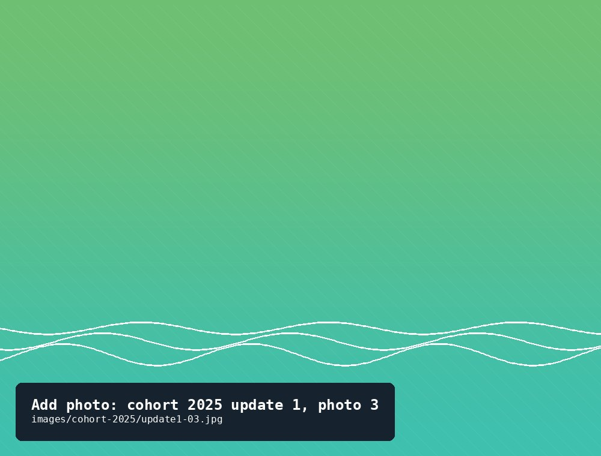
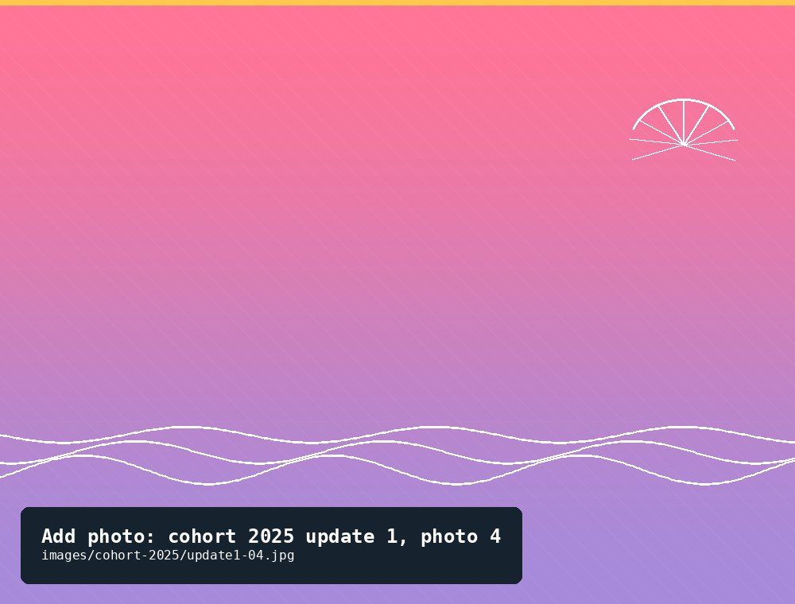
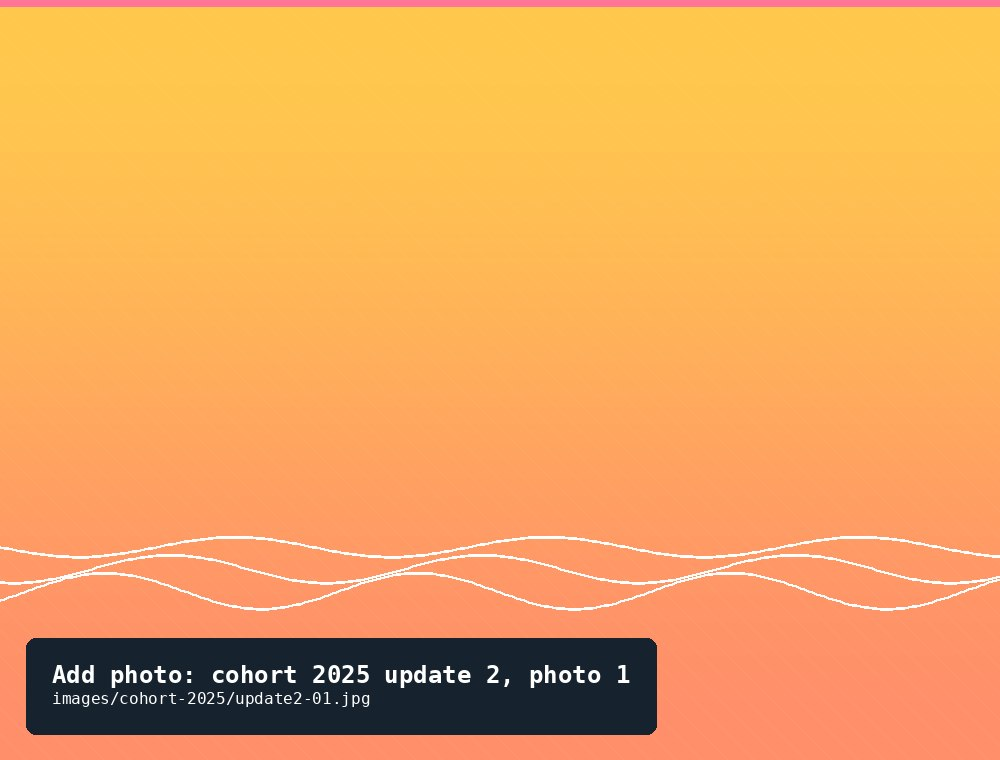
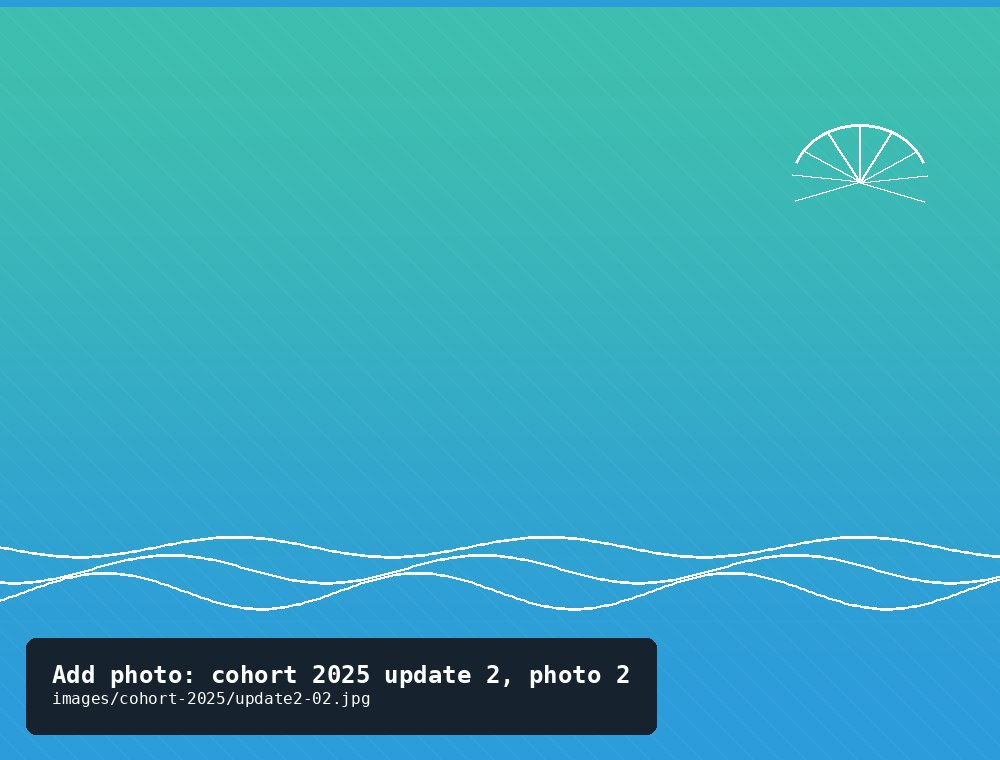
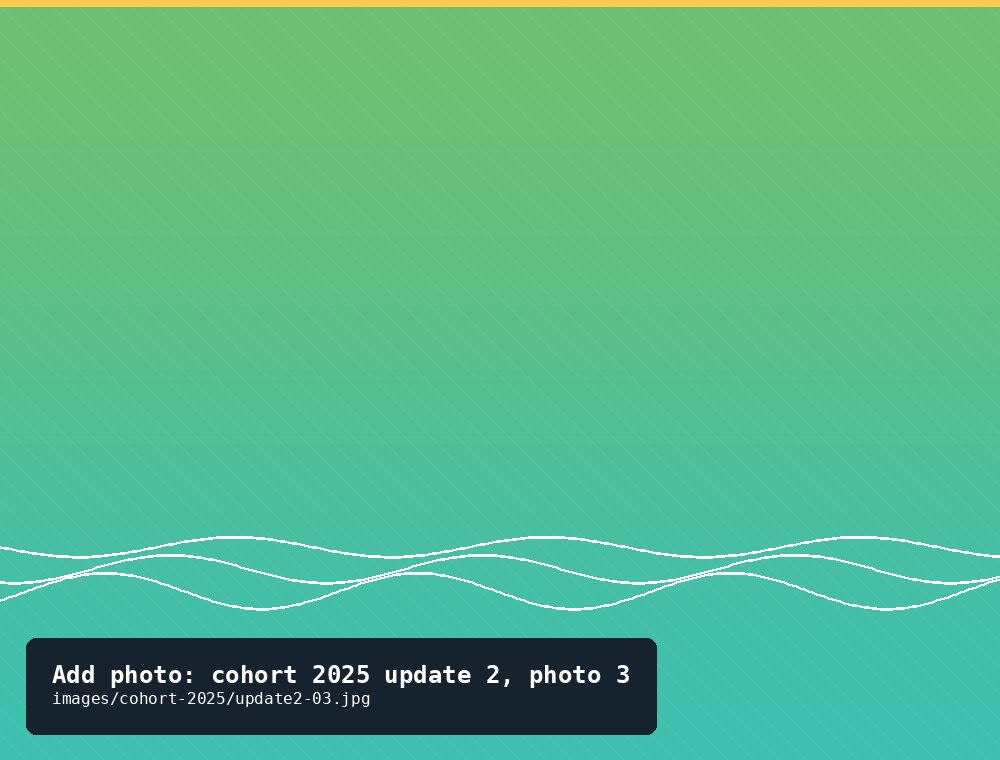
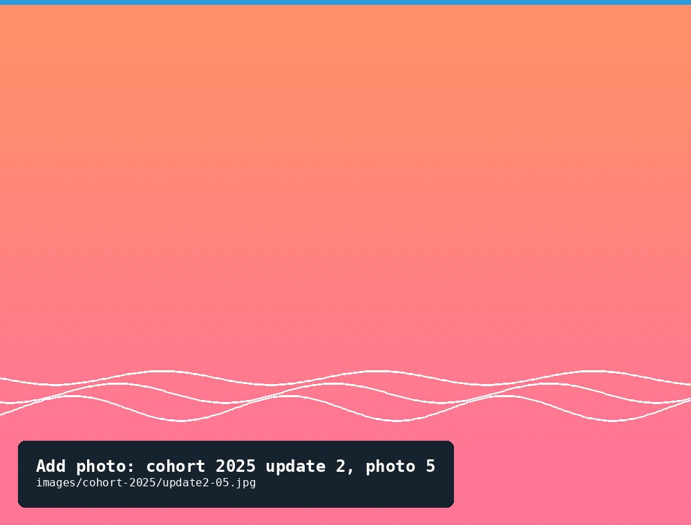

Update log
Progress updates
15
Update 1 — Settling in
June 15, 2025Three months in, the spat have moved from barely visible to unmistakably oyster-shaped. Growth picked up fast once the water warmed past 70°F.
- Fouling notes
Light mud accumulation on the cage floor; first flecks of barnacle spat on the mesh.
- Critters seen
Mud crabs, grass shrimp, a few small blennies sheltering in the cage corners.
- Other observations
Cage float needs a scrub next visit. Growth accelerated noticeably after the warm spell in late May.


20
Update 2 — Summer growth spurt
September 20, 2025Shell growth more than doubled since June. Fouling is heavier than we'd like, and we had one memorable visitor — the full story is on the blog.
- Fouling notes
Heavy barnacle and mussel growth on the cage exterior — due for a thorough scrub and re-hang.
- Critters seen
Mud crabs, skeleton shrimp, a nearby oyster toadfish, and one uninvited blue crab wedged into a seam.
- Other observations
The blue crab had pried open a gap where two panels meet — we've since added a second zip-tie at every seam.



